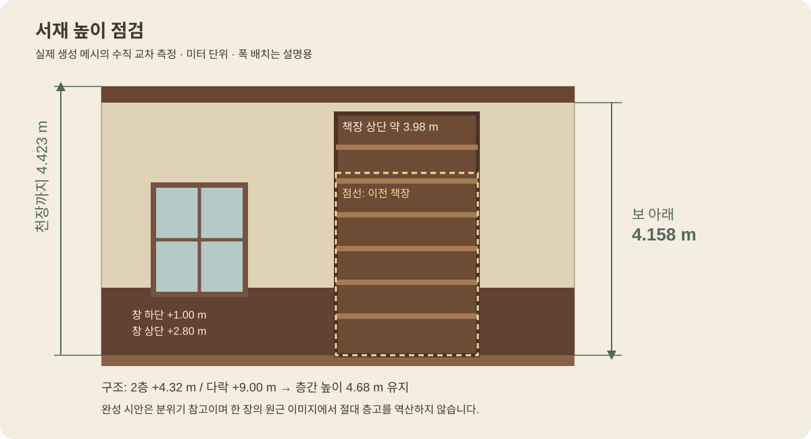

INTO THE NARNIA · UNITY ART REVIEW · 2026.10.23
전시실과 연결 복도
그리고 서재의 높이
구조 확인 단계에서 가구와 마감을 더해 가는 중간 제작본입니다. 이번에는 유물 전시실과 주요 복도를 구성하고, 서재의 층고를 측정한 뒤 상부 비례를 보완했습니다.
확정 도면 유지Unity 실제 화면 11장세부 재질·창밖 풍경·베이크 진행 전
서재 · 층고와 마감의 차이
마감 바닥에서 천장까지 4.423 m, 가장 낮은 보 아래까지 4.158 m입니다. 확정 구조와 일치하므로 천장을 옮기지 않았습니다. 책장 위 빈 벽을 줄이고 천장등·목재 몰딩을 더했습니다.
 이전
이전같은 카메라 위치·시야각으로 비교합니다.
 보완 후
보완 후층고와 창 위치는 유지하고 책장 높이·천장등·상부 목재 마감을 보완했습니다.

높이 측정 도해층간 높이와 실내 마감 후 유효 높이를 구분했습니다. 창 개구부는 유지합니다.
 서재 천장과 책장
서재 천장과 책장천장 4.423 m, 가장 낮은 보 아래 4.158 m. 화면의 넓은 원근감과 실제 높이를 구분해 봅니다.
유물 전시실
 유물 전시실 전체
유물 전시실 전체서쪽 사고 창문·갑옷과 북쪽 진열장을 중심으로 구성했습니다. 가운데는 이동 공간입니다.
 창문과 갑옷
창문과 갑옷투구·어깨 장식은 별도 메시입니다. 유리 파손과 유물 낙하 연출은 다음 상호작용 단계입니다.
 홀로 빠져나가는 아치
홀로 빠져나가는 아치확정 도면의 동쪽 아치를 유지합니다. 사고 후 중앙 홀과 동쪽 보조 계단으로 이어집니다.
 진열장과 수집품
진열장과 수집품천구의·도자기·트로피·작은 청동 말·흉상을 배치했습니다. 문 너머 공용 도서실은 후속 마감 구역입니다.
안내와 피신을 잇는 복도
 동쪽 연결 복도 · 피신 경로
동쪽 연결 복도 · 피신 경로홀에서 보조 계단으로 이어지는 1층 복도입니다. 길 끝이 계단실 문으로 연결됩니다.
 2층 가족 복도
2층 가족 복도교수 구역을 통과하지 않고 동쪽으로 이동하는 안내 경로입니다.
 동측 회랑
동측 회랑중정 쪽 창과 외벽 창을 유지했습니다. 벤치는 벽을 따라 배치했습니다.
 아이들 침실 복도
아이들 침실 복도폭 2 m의 외진 복도입니다. 중앙에 가구를 추가하지 않았으며 기존 끝 수납장으로 마감됩니다.
 1층 전면 갤러리
1층 전면 갤러리식당·음악실·정원 휴게실과 이어지는 통로입니다. 경계에 걸친 반쪽 창은 안쪽 셔터로 마감했습니다.
완성 분위기 참고
아래 두 장은 승인된 시안입니다. 위의 실제 Unity 화면과 구분합니다. 방 배치·창·층고는 확정 도면을 우선합니다.
서재와 전시실 시안 펼치기
 서재 완성 분위기
서재 완성 분위기책장·목재·조명과 생활감 참고
 전시실 완성 분위기
전시실 완성 분위기유물·진열장·창빛·석재 마감 참고
다음 제작 범위응접실·식당·공용 도서실 등 남은 방, 다락과 옷장방, 정원·창밖 풍경, 재질 세부 묘사와 조명 베이크가 남아 있습니다. 유리·유물 파손과 문 상호작용도 아직 연결하지 않았습니다.